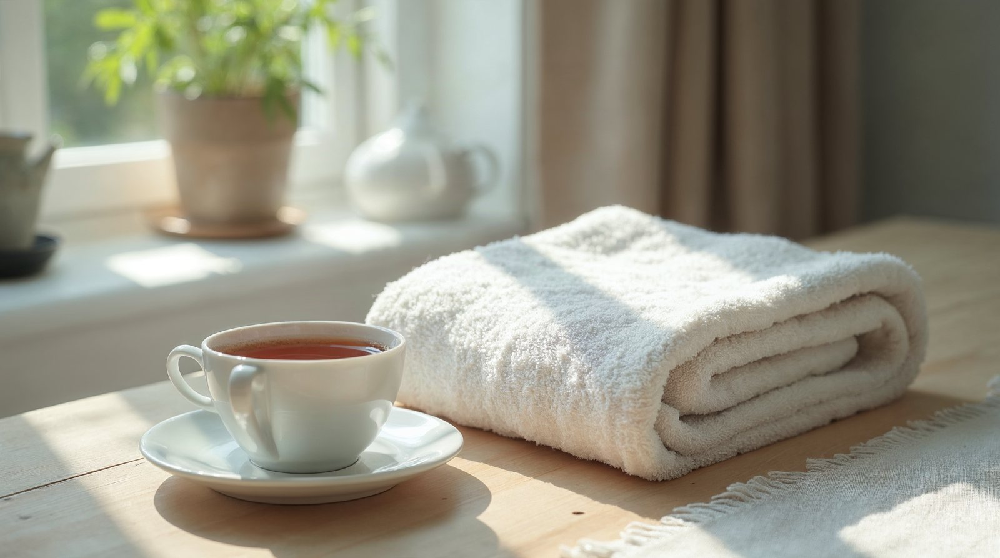
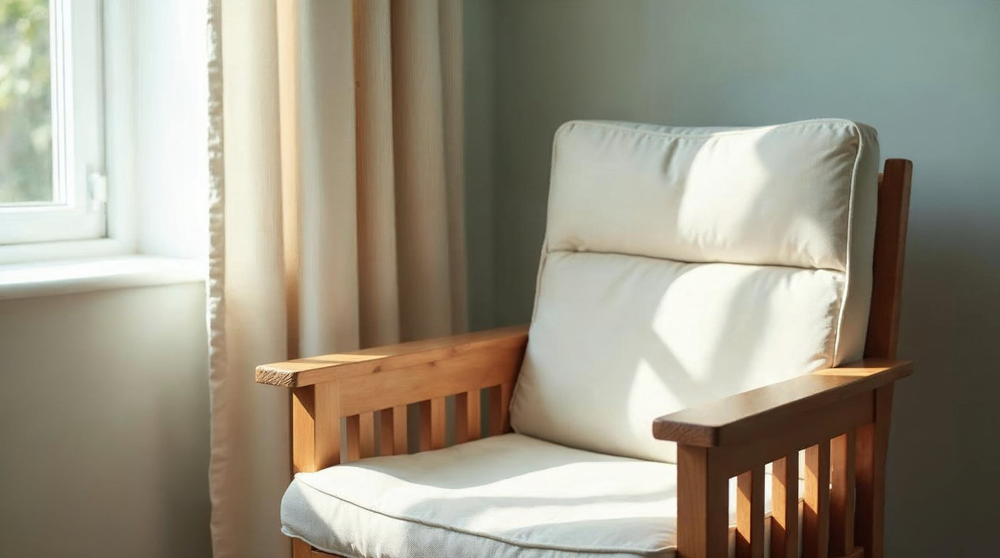
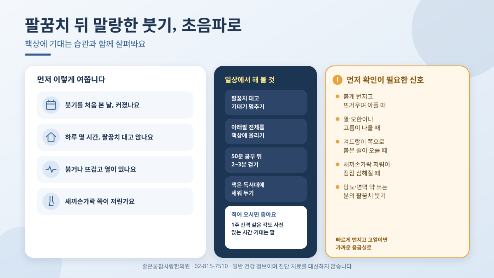

이종호 한의사 감수좋은꿈참사랑한의원 대표원장 (한의사 면허번호 19769)발행 2026-11-27 · 수정 2026-11-27
이 글의 차례
추운 독서실이나 스터디카페에서 몸을 웅크린 채 책상에 팔꿈치를 대고 턱을 괴거나 상체를 기대어 공부하다 보면, 어느 날 팔꿈치 끝 뒤쪽이 탁구공이나 작은 물풍선처럼 말랑하게 부풀어 있는 것을 발견하기도 합니다.
팔꿈치 끝 뼈와 피부 사이에는 마찰을 줄여 주는 얇은 주머니(점액낭)가 있는데, 딱딱한 면에 오래 눌리고 비벼지면 이 주머니에 물이 차서 부풀 수 있습니다. 두꺼운 패딩 소매 덕에 눌리는 느낌을 덜 받다가 뒤늦게 알아차리는 경우도 많습니다.
대개는 크게 아프지 않고 팔도 잘 굽혀지지만, 붓기가 붉고 뜨거우며 누르면 아프거나 열이 난다면 주머니에 감염이 생긴 경우일 수 있어 먼저 병원 진료가 필요합니다. 그렇지 않다면 초음파로 주머니 안의 물과 벽, 주변 힘줄과 뼈 표면을 살펴 상태를 확인하고, 무엇보다 팔꿈치를 누르는 자세부터 바꾸는 것으로 시작합니다.
집에서 바늘로 찔러 물을 빼는 일은 감염 위험이 있어 하지 않습니다.
왜 팔꿈치 뒤가 말랑하게 부어오를까요
- 팔꿈치 끝 뼈(주두)는 피부 바로 아래에 있어 살이 거의 없습니다. 그 사이의 점액낭은 평소엔 납작하게 있다가, 같은 자리가 오래 눌리거나 반복해서 비벼지면 자극을 받아 안에 물이 차오를 수 있습니다.
- 공부나 컴퓨터 작업을 하며 팔꿈치를 책상 모서리나 딱딱한 상판에 대고 상체 무게를 싣는 자세가 하루 몇 시간, 몇 주씩 이어지면 이런 자극이 쌓입니다. 예전부터 '학생 팔꿈치'라는 별명이 붙은 이유입니다.
- 추운 공간에서는 몸을 웅크리며 팔꿈치를 몸 앞쪽 책상에 붙이고 어깨를 움츠리는 자세가 늘어납니다. 손이 시려 팔짱을 끼거나 팔꿈치를 괴는 시간도 길어집니다.
- 두꺼운 외투나 니트 소매를 입은 채 앉아 있으면 눌림이 덜 느껴져 자세를 바꾸지 않고 오래 버티게 됩니다.
- 넘어지며 팔꿈치를 바닥에 찧거나 문틀에 세게 부딪힌 뒤에 생기기도 합니다. 빙판길이 많은 겨울에는 이런 경우도 함께 생각합니다.
- 통풍이나 류마티스 관절염처럼 몸 전체의 염증 질환이 있는 분에게도 팔꿈치 뒤 붓기가 나타날 수 있습니다.
- 피부에 작은 상처나 긁힌 자리가 있으면 그 틈으로 세균이 들어가 주머니에 감염이 생길 수 있어, 붉고 뜨거운 붓기는 다르게 다룹니다.
- 한의학에서는 한자리에 오래 눌리고 기혈이 잘 돌지 못해 물기가 고이는 모습을 습(濕)이 머문다고 표현하기도 하고, 오래 앉아 공부하며 생활 리듬이 흐트러진 몸 전체의 상태도 함께 봅니다.
먼저 이렇게 여쭙니다
- 붓기를 처음 알아차린 때가 언제인지, 그 뒤 크기가 커졌는지 그대로인지 여쭙니다.
- 하루에 몇 시간쯤 책상 앞에 앉아 있는지, 팔꿈치를 대고 기대거나 턱을 괴는 습관이 있는지, 어느 쪽 팔인지 여쭙니다.
- 넘어지거나 부딪힌 일이 있었는지, 팔꿈치 피부에 긁히거나 갈라진 상처가 있었는지 여쭙니다.
- 붓기가 붉거나 뜨거운지, 누르면 아픈지, 열이나 오한, 몸살 기운이 있는지 여쭙니다.
- 팔을 끝까지 굽히고 펴는 데 불편함이 있는지, 팔꿈치 안쪽을 따라 새끼손가락 쪽이 저린지 여쭙니다.
- 예전에 통풍, 류마티스 관절염, 당뇨 진단을 받은 적이 있는지, 같은 자리가 부었던 적이 있는지 여쭙니다.
- 복용 중인 약과, 피를 묽게 하는 약이나 스테로이드를 쓰고 있는지 여쭙니다.
- 붓기를 직접 짜거나 바늘로 찔러 본 적이 있는지도 여쭙니다.
초음파로는 무엇을 보나요
- 초음파는 피부 위에 젤을 바르고 탐촉자를 대어 몸속 연부 조직을 실시간으로 보는 검사로, 방사선을 쓰지 않고 진료실에서 바로 볼 수 있습니다. 팔꿈치 뒤처럼 피부 가까이 있는 구조를 살피기에 알맞습니다.
- 먼저 부어오른 자리 아래에 물이 고인 주머니가 있는지, 크기가 어느 정도인지 봅니다. 물이 차 있다면 화면에서 어둡게 보이는 공간으로 나타나는 경우가 많습니다.
- 주머니 안이 맑은 물처럼 고르게 보이는지, 칸막이나 찌꺼기 같은 것이 섞여 보이는지, 주머니 벽이 얇은지 두꺼워졌는지를 봅니다. 오래되거나 여러 번 반복된 붓기는 벽이 두껍고 안이 고르지 않게 보이기도 합니다.
- 팔꿈치 뒤에서 팔을 펴는 힘줄(삼두근 힘줄)이 뼈에 붙는 자리와 뼈 표면을 함께 살펴, 붓기가 주머니에만 있는지 힘줄이나 관절 쪽과 이어져 있는지 확인합니다.
- 반대쪽 팔꿈치의 같은 자리를 비교해 보며 차이를 설명해 드립니다.
- 다만 초음파 화면만으로 감염 여부나 통풍 결정이 있는지를 확정하기는 어렵습니다. 감염이 의심되면 주사기로 물을 빼서 검사하거나 혈액 검사가 필요할 수 있어, 그런 처치와 검사가 가능한 병원으로 안내해 드립니다.
- 넘어진 뒤 생긴 붓기라 뼈가 다쳤을 가능성이 있다면 엑스레이 확인이 먼저입니다.
- 붓기를 따라가며 보는 경우에는 처음 크기를 기록해 두었다가 몇 주 뒤 같은 자리를 다시 보며 비교합니다.

일상에서 먼저 해 볼 수 있는 것
오늘부터: 팔꿈치 누르지 않기
- 책상에 팔꿈치를 대고 상체를 기대거나 턱을 괴는 자세를 멈추는 것이 가장 먼저입니다. 붓기가 있는 동안 같은 자리를 계속 누르면 가라앉을 틈이 없습니다.
- 팔은 팔꿈치가 아니라 아래팔 전체를 책상 위에 올려 무게를 나눕니다. 책상 앞 모서리에 접은 수건이나 얇은 쿠션을 깔면 아래팔이 닿는 면이 부드러워집니다.
- 팔꿈치가 닿는 자리가 생길 수밖에 없다면 얇은 팔꿈치 패드를 대거나, 팔꿈치 아래에 부드러운 패드를 둡니다.
- 의자 높이를 조절해 팔을 내려놓았을 때 팔꿈치 각도가 90도 안팎이 되도록 맞춥니다. 의자가 너무 낮으면 팔꿈치를 책상에 올리고 기대기 쉬워집니다.
공부 자리 다시 꾸리기
- 독서실이 춥다면 무릎 담요와 얇은 조끼, 손목 토시로 몸을 데워 웅크리는 자세를 줄입니다. 손이 시려 팔짱을 끼고 팔꿈치를 책상에 대는 일이 줄어듭니다.
- 책은 독서대에 세워 고개와 상체를 숙이지 않게 합니다. 상체가 앞으로 쏠릴수록 팔꿈치로 몸을 받치게 됩니다.
- 50분 공부하면 일어나 2~3분 걷고 팔을 쭉 폈다 굽히기를 10번 합니다. 휴대폰 타이머를 맞춰 두면 놓치지 않습니다.
- 잠깐 엎드려 자는 쪽잠도 팔꿈치를 책상에 대는 자세가 되기 쉬워, 의자에 등을 기대고 눈을 감는 방식으로 바꿔 봅니다.
붓기 다루기
- 붉거나 뜨겁지 않은 붓기라면 처음 며칠은 하루 두세 번 수건으로 감싼 냉찜질을 10~15분 해 볼 수 있습니다.
- 가볍게 감싸는 탄력 붕대를 낮 동안 쓰는 방법도 있지만, 손이 저리거나 차가워질 만큼 세게 감지 않습니다.
- 붓기를 손으로 주무르거나 짜지 않고, 집에서 바늘로 찔러 물을 빼지 않습니다. 감염의 통로가 될 수 있습니다.
- 팔꿈치 피부에 작은 상처가 있다면 깨끗이 씻고 덮어 두며, 상처 주변이 붉어지는지 매일 봅니다.
기록하기
- 붓기를 처음 발견한 날, 옆에서 찍은 사진, 대략의 크기(동전 크기, 탁구공 크기처럼)를 적어 둡니다. 1주일 간격으로 같은 각도에서 사진을 찍으면 변화를 비교하기 쉽습니다.
상황별 예시
- 예를 들어 노량진에서 공무원 시험을 준비하며 하루 열 시간 넘게 독서실 책상에 앉아 있는 수험생이, 추워서 몸을 웅크리고 오른쪽 팔꿈치를 책상에 대고 턱을 괴는 습관이 생긴 뒤 팔꿈치 뒤가 말랑하게 부푼 경우, 붉거나 뜨겁지 않다면 팔꿈치를 대지 않도록 책상에 수건을 깔고 독서대를 쓰며 2주쯤 크기 변화를 사진으로 기록해 봅니다.
- 예를 들어 연말 마감으로 사무실 책상에 팔꿈치를 대고 모니터 쪽으로 몸을 기울여 일하던 직장인이, 팔꿈치 뒤 붓기와 함께 새끼손가락 쪽이 저린 경우에는 팔꿈치 안쪽을 지나는 신경이 함께 눌렸을 수 있어, 붓기와 저림을 나누어 진찰합니다.
- 예를 들어 빙판길에서 넘어지며 팔꿈치를 바닥에 찧은 뒤 다음 날 팔꿈치 뒤가 부풀고 멍이 든 경우에는 뼈가 다쳤는지 엑스레이 확인을 먼저 권합니다. 뼈에 문제가 없다면 초음파로 주머니와 힘줄을 살펴봅니다.
- 예를 들어 팔꿈치 뒤 붓기가 하루 이틀 사이 빨갛게 번지고 뜨거우며, 누르면 아프고 몸이 으슬으슬한 경우에는 감염 가능성이 있어 기다리지 말고 당일 병원 진료를 받습니다.
- 예를 들어 통풍 진단을 받은 적이 있는 분이 갑자기 팔꿈치 뒤가 붓고 아픈 경우에는 통풍 발작과 관련이 있을 수 있어 내과나 류마티스내과 진료를 함께 권합니다.
자주 하는 오해
- 말랑한 혹이 생기면 큰 병이 아닐까 걱정하는 분이 많지만, 팔꿈치 끝 뒤에 생긴 말랑한 붓기는 눌림으로 주머니에 물이 찬 경우가 흔합니다. 다만 붉고 뜨겁다면 이야기가 달라집니다.
- 물을 빼면 바로 해결된다고 생각하기 쉽지만, 팔꿈치를 누르는 자세가 그대로면 다시 차오르는 경우가 많습니다. 물을 빼는 처치는 필요할 때 병원에서 깨끗한 환경에서 받습니다.
- 아프지 않으니 그냥 두어도 된다고 여기는 분도 있습니다. 크게 아프지 않아도 계속 누르면 붓기가 오래가고 주머니 벽이 두꺼워질 수 있어, 자세는 바로 바꾸는 편이 좋습니다.
- 뜨거운 찜질을 하면 빨리 빠진다고 생각하는 분도 있는데, 감염이 섞인 붓기라면 상태를 가리거나 번지게 할 수 있어 붉고 뜨거운 붓기에는 찜질보다 진료가 먼저입니다.
- 초음파로 보면 모든 것을 알 수 있다고 기대하기도 하지만, 초음파는 모양과 구조를 보는 데 강점이 있고 감염이나 결정 여부는 다른 검사가 필요할 수 있습니다.

스스로 점검해 보세요
- 하루 몇 시간씩 책상에 팔꿈치를 대고 기대거나 턱을 괴는 습관이 있다.
- 붓기가 팔꿈치 끝 뒤쪽 한가운데에 있고, 눌러 보면 말랑하게 출렁인다.
- 붓기 주변 피부색은 반대쪽과 비슷하고, 만져도 뜨겁지 않다.
- 팔을 끝까지 굽히고 펴는 데 큰 불편이 없다.
- 열이나 오한, 몸살 기운은 없다.
- 팔꿈치 피부에 긁히거나 갈라진 상처가 있다.
- 새끼손가락과 넷째 손가락 쪽이 저리거나 둔한 느낌이 함께 있다.
한의원에서 함께 살필 수 있는 경우
- 붉거나 뜨겁지 않은 말랑한 붓기가 있어 지금 상태를 눈으로 확인해 보고 싶은 경우
- 자세를 바꿨는데도 2~3주 지나도록 크기가 그대로인 경우
- 팔꿈치 붓기와 함께 목, 어깨, 등 위쪽이 굳어 공부 자세 전체를 점검하고 싶은 경우
- 오래 앉아 공부하며 잠과 소화, 피로까지 흐트러져 몸 전체를 함께 보고 싶은 경우
좋은꿈참사랑한의원에서는 첫 방문 때 붓기를 처음 알아차린 때와 크기 변화, 하루 공부나 작업 시간, 팔꿈치를 대는 습관과 넘어진 일이 있었는지를 먼저 듣습니다. 그다음 맥부터 짚어 몸 전체의 피로와 찬 정도를 살피고, 혀와 배를 함께 보며 오래 앉아 지내는 동안 잠과 소화가 어떤지 확인합니다.
이어서 붓기의 크기와 온도, 피부색, 상처가 있는지를 보고 팔을 굽히고 펴는 범위와 새끼손가락 쪽 감각을 살핍니다. 필요하면 초음파로 주머니 안의 물과 벽, 팔을 펴는 힘줄과 뼈 표면을 반대쪽과 비교해 화면을 함께 보며 설명해 드립니다.
붉고 뜨겁거나 열이 나 감염이 의심되거나, 물을 빼는 처치나 혈액 검사가 필요해 보이면 그런 진료가 가능한 병원을 먼저 안내해 드립니다. 그렇지 않다면 공부 자세와 책상 높이, 쉬는 시간을 함께 정하고, 함께 굳은 목과 어깨에는 침이나 온열 치료를 쓸지 상의합니다. 다음 진료에서는 지난번 찍어 두신 사진과 기록을 이어서 보며 크기 변화를 비교합니다.
얼마나 지켜보고 언제 상담할까요
- 팔꿈치를 누르지 않는 자세로 바꾼 뒤 1~2주 동안 크기를 사진으로 비교합니다. 눌림이 줄면 몇 주에 걸쳐 천천히 가라앉는 경우가 많습니다.
- 2~3주가 지나도 크기가 그대로이거나 오히려 커진다면 초음파로 상태를 확인해 보세요.
- 가라앉았다가 같은 자리가 다시 붓는 일이 반복된다면 자세와 함께 다른 원인이 없는지 상담을 받아 보세요.
- 붓기가 붉고 뜨거워지거나 열이 나면 지켜보지 말고 바로 병원 진료를 받습니다.
이렇게 기록해 오시면 상담이 쉬워집니다
- 붓기를 처음 알아차린 날과 1주 간격으로 같은 각도에서 찍은 사진
- 하루 앉아 있는 시간, 팔꿈치를 대는 습관이 있는 쪽 팔
- 넘어지거나 부딪힌 일, 팔꿈치 피부 상처 여부
- 붓기의 온도, 색 변화, 누를 때 통증 정도
- 새끼손가락 쪽 저림이 있다면 언제 심한지
- 통풍, 류마티스 관절염, 당뇨 등 진단받은 질환과 복용 중인 약
이런 증상은 먼저 확인이 필요합니다
- 붓기 주변이 빨갛게 번지고 뜨거우며 누르면 아픈 경우
- 열, 오한, 몸살 기운이 함께 있거나 붓기에서 고름 같은 것이 나오는 경우
이런 신호가 있으면 한의원보다 가까운 병원이나 응급실을 먼저 찾으세요.
관련 글
- 팔꿈치가 아플 때 초음파로는 무엇을 확인하나요?
- 20대가 침대에서 휴대전화를 보다가 팔꿈치와 새끼손가락 쪽이 저릴 때는 어떻게 살피나요?
- 스터디카페 낮은 책상에서 고개를 숙여 공부하면 등 위쪽이 뻐근할 때는?

여쭙는 것
- 붓기를 처음 알아차린 때가 언제인지, 그 뒤 크기가 커졌는지 그대로인지 여쭙니다.
- 하루에 몇 시간쯤 책상 앞에 앉아 있는지, 팔꿈치를 대고 기대거나 턱을 괴는 습관이…
- 넘어지거나 부딪힌 일이 있었는지, 팔꿈치 피부에 긁히거나 갈라진 상처가 있었는지 여…
생활에서 해 볼 것
- 책상에 팔꿈치를 대고 상체를 기대거나 턱을 괴는 자세를 멈추는 것이 가장 먼저입니다…
- 팔은 팔꿈치가 아니라 아래팔 전체를 책상 위에 올려 무게를 나눕니다. 책상 앞 모서…
- 팔꿈치가 닿는 자리가 생길 수밖에 없다면 얇은 팔꿈치 패드를 대거나, 팔꿈치 아래에…
한의원에서 함께 살필 것
- 붉거나 뜨겁지 않은 말랑한 붓기가 있어 지금 상태를 눈으로 확인해 보고 싶은 경우
- 자세를 바꿨는데도 2~3주 지나도록 크기가 그대로인 경우
- 팔꿈치 붓기와 함께 목, 어깨, 등 위쪽이 굳어 공부 자세 전체를 점검하고 싶은 경우
먼저 확인이 필요한 신호
- 붓기 주변이 빨갛게 번지고 뜨거우며 누르면 아픈 경우
- 열, 오한, 몸살 기운이 함께 있거나 붓기에서 고름 같은 것이 나오는 경우
한눈에 보는 표
| 구분 | 핵심 |
|---|---|
| 여쭙는 것 | 붓기를 처음 알아차린 때가 언제인지, 그 뒤 크기가 커졌는지 그대로인지 여쭙니다. 하루에 몇 시간쯤 책상 앞에 앉아 있는지, 팔꿈치를 대고 기대거나 턱을 괴는 습관이 있는지, 어느 쪽 팔인지 여쭙니다. |
| 생활에서 해 볼 것 | 책상에 팔꿈치를 대고 상체를 기대거나 턱을 괴는 자세를 멈추는 것이 가장 먼저입니다. 붓기가 있는 동안 같은 자리를 계속 누르면 가라앉을 틈이 없습니다. 팔은 팔꿈치가 아니라 아래팔 전체를 책상 위에 올려 무게를 나눕니다. 책상 앞 모서리에 접은 수건이나 얇은 쿠션을 깔면 아래팔이 닿는 면이 부드러워집니다. |
| 한의원에서 함께 살필 것 | 붉거나 뜨겁지 않은 말랑한 붓기가 있어 지금 상태를 눈으로 확인해 보고 싶은 경우 자세를 바꿨는데도 2~3주 지나도록 크기가 그대로인 경우 |
| 먼저 확인이 필요한 신호 | 붓기 주변이 빨갛게 번지고 뜨거우며 누르면 아픈 경우 열, 오한, 몸살 기운이 함께 있거나 붓기에서 고름 같은 것이 나오는 경우 |
자주 묻는 질문
팔꿈치 뒤 말랑한 붓기는 저절로 가라앉기도 하나요?
붉거나 뜨겁지 않고 눌림 때문에 생긴 붓기라면, 팔꿈치를 누르지 않는 자세로 바꾼 뒤 몇 주에 걸쳐 천천히 줄어드는 경우가 많습니다. 2~3주가 지나도 그대로이거나 커지면 확인을 받아 보세요.
초음파 검사는 어떤 느낌인가요?
피부에 젤을 바르고 탐촉자를 대어 보는 검사로, 붓기가 있는 자리를 살짝 누르며 보기 때문에 눌리는 느낌이 있을 수 있습니다. 불편하면 바로 말씀해 주시면 누르는 세기를 조절합니다.
한의원에서 물을 빼 주나요?
주사기로 물을 빼는 처치나 그 물을 검사하는 일은 병원에서 받으시도록 안내해 드립니다. 한의원에서는 초음파로 상태를 살피고, 자세와 생활 조절, 함께 굳은 목과 어깨를 살피는 쪽을 맡습니다.
수험 기간이라 계속 앉아 있어야 하는데 어떻게 하나요?
앉는 시간을 줄이기 어렵다면 팔꿈치가 닿는 면을 바꾸는 것부터 해 보세요. 책상 앞 모서리에 수건을 깔고 아래팔 전체로 무게를 나누며, 독서대로 상체가 앞으로 쏠리지 않게 하고 50분마다 일어나 팔을 펴 주세요.
붓기가 없어졌다가 다시 생기면 어떻게 하나요?
같은 자세가 다시 시작되었는지 먼저 돌아보고, 반복된다면 주머니 벽이 두꺼워졌는지나 다른 원인이 없는지 초음파와 진찰로 확인해 보는 것이 좋습니다. 붉고 뜨겁다면 바로 병원 진료를 받으세요.
좋은꿈참사랑한의원은 재진 때 지난번 이야기부터 이어서 여쭙니다. 진료시간과 예약은 오시는 길에서 확인하세요.
어디서 상담받을 수 있나요?
좋은꿈참사랑한의원은 서울 동작구 만양로2길 2 신성빌딩 3층·5층(서울 동작구 상도동, 7호선 상도역 3번 출구 근처)에 있습니다. 한의사 3명(이종호 대표원장, 조영기 수석진료원장, 정원영 진료원장)이 진료합니다. 진료시간은 평일 09:30~20:00(점심 13:00~14:00), 토·일·공휴일 09:30~15:00이며, 방문 전 전화로 확인을 권합니다. 예약은 네이버 예약, 카카오톡 상담, 전화 02-815-7510로 받습니다.
이 글은 일반적인 건강 정보이며 개인의 진단이나 치료를 대신하지 않습니다. 증상이 있거나 복용 중인 약이 있다면 진료를 통해 확인하세요. 치료 효과는 개인마다 다를 수 있습니다.
작성 기준: 일반적으로 알려져 있는 건강 정보를 참고해 정리했습니다(대표원장 감수). 증상 기록은 1~2주 동안 하루 1회, 비슷한 시간에 적어 오시면 지난 상태와 비교하기 쉽습니다.